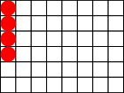
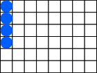
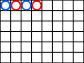
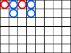
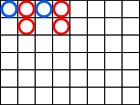

好路追注
百家樂好路追注功能是一款可以幫助用戶在線情況下繼續追注好路的功能，用戶只需要預先設定好一定條件、包括桌台、好路、注金等數值，即可啟用該功能。同時，該功能內置的眾多風險規避條件以及好路統計數據，可為用戶出謀劃策、保駕護航，用戶只需動動手指，即可坐享其成。
用戶設置
- 用戶選擇自己所需要下注的桌台與好路，並且設定好每一注的金額後，即可運行本程序，每當桌台出現您所選擇的好路時，即會自動幫您下注所設定的金額。
功能設置
- 設置運行時間最大不能超過1440分鐘，當運行時間達到用戶設置的時限後，即會停止運行好路追注。
- 當遊戲在例行維護時，系統將會自動停止好路追注功能。
- 每筆下注金額根據用戶遊戲類型的最小限紅到最大限紅之間。
當餘額低於____元。自動停止追注 (最低金額為1元)
- 當可用額度低於或等於設定金額後，系統就不再繼續自動追注，填寫金額不能低於單注最低金額
盈利金額設置
- 您可以設定一個金額數值，當下注盈利達到您設置的金額數值時（0表示無限制），即會自動幫您停止好路追注。
何謂好路趨勢？
- 本遊戲內設定的好路共有長莊，長閒，一閒兩莊，一莊兩閒，大路單跳，共5種。詳情請查閲好路詳解。
- 有一些特定的好路，如果接下來的開牌結果是符合其好路構成模型的，這樣的牌路稱之為該牌路的好路趨勢，且牌路會一直顯示符合該好路。
長莊

一直追注莊
長閒

一直追注閒
大路單跳

(莊閒莊閒) 追注一次莊
大路單跳
(閒莊閒莊) 追注一次閒
一廳兩房(莊)

追注一次莊
一廳兩房(閒)

追注一次閒
注意事項
- 本功能下注時，均為免傭，並且只能下莊、閒。
- 本網站為真人即時視像設置，若有發生特殊情況將依照本網站公告之辦法處理。
- 洗牌中途如有牌只不慎掉落台底或是離開鏡頭範圍，則監場將即時另取新牌更換,重新洗牌。
- 派牌中途，荷官不慎拉出2或3張陰牌，則由監場按照正確位置給予更正。
- 如不需博牌，但荷官又拉多一張牌，則由監場將此牌放置在牌靴底下做為下一局銷牌，然後牌局照舊進行。
- 如牌局沒有銷牌,而牌已開啟2張或以上(可以看見牌面),則該局將會取消,並更換新靴。
- 在遊戲過程中，如果有一張牌發現在鞋盒翻開 ，則該牌和所有的賭注都視為有效，並繼續正常遊戲，但是，如果遊戲中有提供保險，則保險無效。
- 在遊戲過程上，如果荷官忘記提供保險卡，掃瞄下暴露了卡，我們將視為保險無效和喪失，遊戲將繼續正常運行。
- 在遊戲過程中，如果荷官忘記掃瞄卡，導致在位置上錯誤。我們將重新安排閒和莊初始牌，無效保險，遊戲將繼續正常運行。
- 最終解釋權歸公司所有。
本網站為真人現場操作，若有操作失誤，請各位會員見諒。
當前使用人數:
178
百家樂好路追注
-
下注金額0.00
-
輸贏0.00
-
下注場次0/0
-
剩餘時間49分鐘
風險設置
請注意！！每注下注金額會因為各桌跟額及會員限額導致無法追注
盈利金額,自動停止追注,0表示無限制
盈利金額,自動停止追注,0表示無限制
-
每注下注金額20-50000
-
追注時間最多1440分鐘
-
餘額低於自動停止追注(最低金額為1元)
-
盈利金額自動停止追注(0表示無限制)
助手已設置成功，已開始追注！
| No. | 下注時間 | 好路類型 | 金額 | 輸贏/結果 |
|---|
| 1 | undefined | undefined | 0 | 結算中 |
|---|---|---|---|---|
| 台桌名稱 | 1桌 1靴 1局 | |||
| 單號 | 1 | |||
| No. | 遊戲編號 | 開始時間 | 結束時間 |
|---|
| 1 | 29 | 2021-07-07 03:26:48 | 2021-07-07 03:26:48 運行中 |
|---|---|---|---|
| 下注場次 | 0/0 | 派彩 | 0.00 |
| 金額 | 0.00 | 輸贏 | 0.00 |
| 1 | 29 | 2021-07-07 03:26:48 | 2021-07-07 03:26:48 運行中 |
| 下注場次 | 0/0 | 派彩 | 0.00 |
| 金額 | 0.00 | 輸贏 | 0.00 |
統計輸贏金額
0.00
每頁顯示20
共計0筆
頁次1/1
好路頻率
好路勝率
MB2001
173
6%
MB2001
173
6%
MB2001
173
6%
長莊
173
6%
長閒
173
6%
大路單跳
173
6%
一廳兩房(莊)
173
6%
一廳兩房(閒)
173
6%